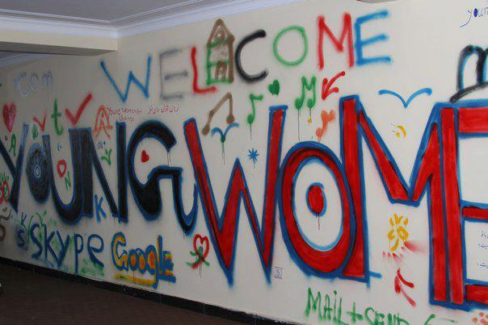

|
|

افتتاح اولین کافه اینترنتی زنانه در افغانستان
جمعه19 اسفند 1390
بی بی سی :همزمان با روز بین المللی زن در کابل، پایتخت افغانستان یک کافه اینترنتی زنانه افتتاح شده است. این اولین کافی نت زنانه در افغانستان است که به یاد شیرگل، عروس ۱۵ ساله ای که چند ماه پیش توسط شوهرش زندانی و شکنجه شد، شیرگل نام گرفته است.
شیرگل وقتی که حاضر نشد تقاضای همسرش برای روسپی گری را بپذیرد در زیرزمین خانه خود ماه ها زندانی شد.
گروهی از فعالان زن به نام "زنان جوان حامی تغییر" این کافه اینترنتی را افتتاح کرده اند. این گروه می گویند در کابل کافی نت های زیادی وجود دارد اما زنان نمی توانند به آنها مراجعه کنند چون با آزار از سوی مردان مواجه می شوند. فضای این کافه ها برای زنان چندان مناسب نیست.
این فعالان زن می خواهند چند کافه اینترنتی مشابه را در سایر ولایت های افغانستان افتتاح کنند.
این حرکت که بیشتر نمادین است می تواند روحیه زنان افغان را افزایش دهد.
میلیون ها دختر افغان امروز به مدرسه می روند، زنان به کار و سیاست بازگشته اند اما زندگی اغلب زنان افغان هنوز هم با چالش های زیادی روبروست.
میلیون ها زن افغان به ویژه در مناطق روستایی از حقوق اولیه خود محرومند، اغلب توسط بستگان خود مجبور به ازدواج های ناخواسته می شوند و به دست همسرانشان ظالمانه کتک می خورند.
اخیرا بعد از این که شورای مذهبی افغانستان اعلام کرد زنان نباید با مردان معاشرت کنند و حق مسافرت به تنهایی را ندارند، موضوع حقوق زنان، موضوعی داغ شده است.
فعالان زن، دولت افغانستان را متهم کرده که چشمش را به روی نقض حقوق زنان بسته است.
در حالیکه چندین زن از این پس می توانند از آزادی نسبی در کافه شیرگل برخوردار شوند، اغلب زنان افغان هنوز هم مانند شیرگل قربانی خشونت خانگی اند.